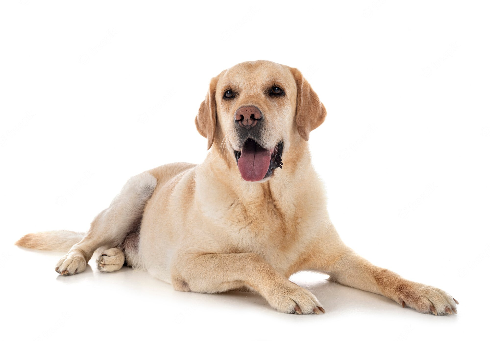
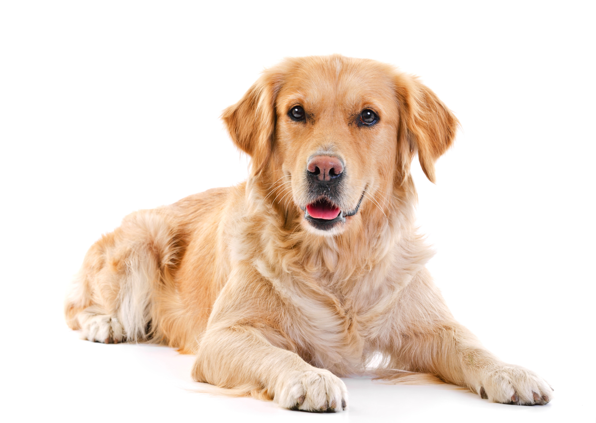

Labrador and Golden Retriever
Two of the popular breeds for decades to have as loyal companions are golden and the Labrador retriever.
They are two very intelligent, loyal and child-friendly dog breeds, hence their popularity. But, because of
their somewhat similar appearance and because the surname of the breed is the same, many people confuse them.
Although they are close relatives and do have a similar build and constitution, they actually have quite a few
distinguishing features.
Labrador Retriever

Behaviour and character:
Golden Retriever

Behaviour and character:
Faithful
Caring
Confident
Docile
Calm
Intelligent
Balanced
Patient
Courageous
My experience with these dogs:
I'm sure you've seen a blind man with his dog. They are usually Golden Retrievers.
As puppies you can keep them as a normal dog, although they are not allowed to play with them.
You can go everywhere with him, he has an assistance dog tag.
Some fail the tests and are adopted by their first caregivers.
It's great to see them doing their job.
My friend Kenzo passed the tests and is a great assistance dog.
I met another dog of this breed called Urko.
If you want to know more:
The Kennel Club : UK
Labrador Retriever
Golden Retriever
Wikipedia : The Free Encyclopedia
Labrador Retriever
Golden Retrieber